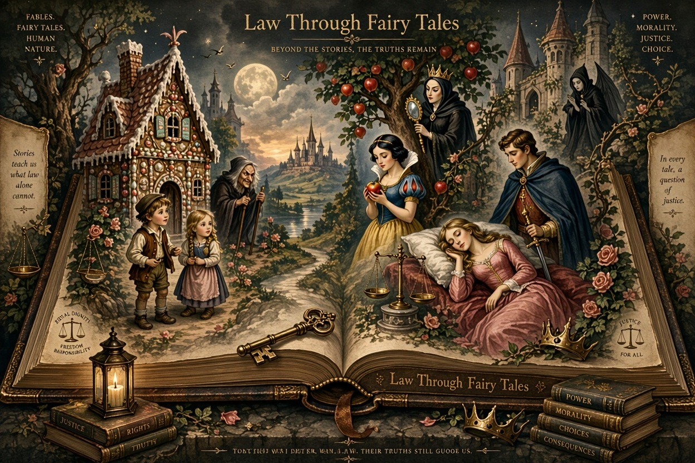

當童話遇上法律，
原來幸福結局也可能暗藏罪與罰。
睡美人的吻，是歌頌千古的浪漫，還是流傳千古的性犯罪？
糖果屋的父母，是孩子不慎的迷路，還是蓄意將孩子推向森林的遺棄？
童話裡的王子未必光明磊落，巫婆也未必十惡不赦。那些被寫成幸福結局的故事，或許藏著另一種不為人知的真相。

故事選集
睡美人的吻，是歌頌千古的浪漫，還是流傳千古的性犯罪？
糖果屋的父母，是孩子不慎的迷路，還是蓄意將孩子推向森林的遺棄？
童話裡的王子未必光明磊落，巫婆也未必十惡不赦。那些被寫成幸福結局的故事，或許藏著另一種不為人知的真相。
